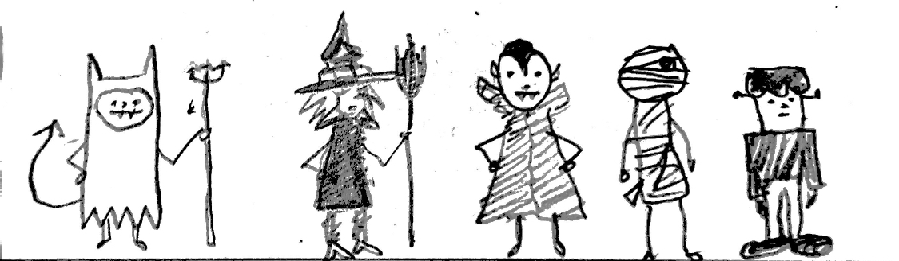
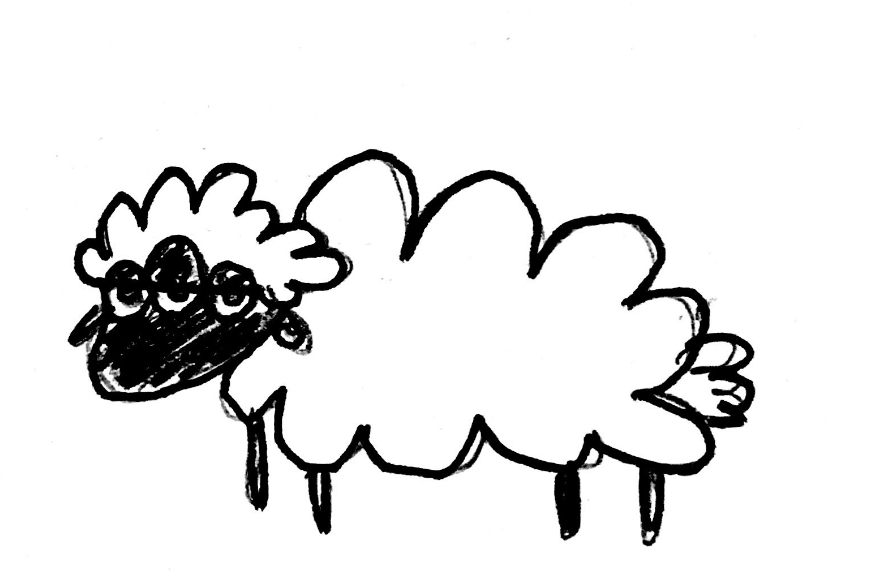
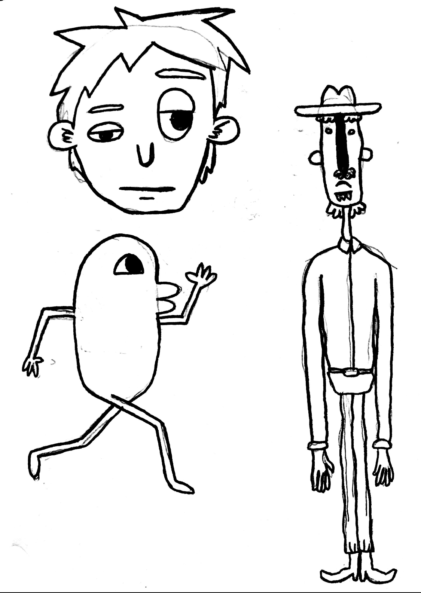
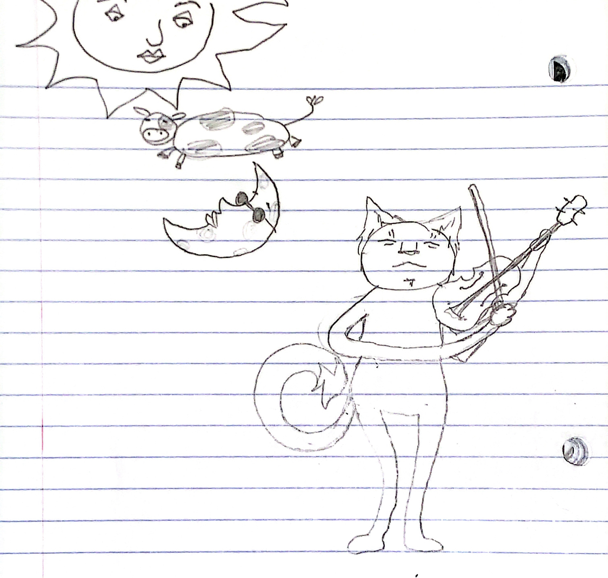
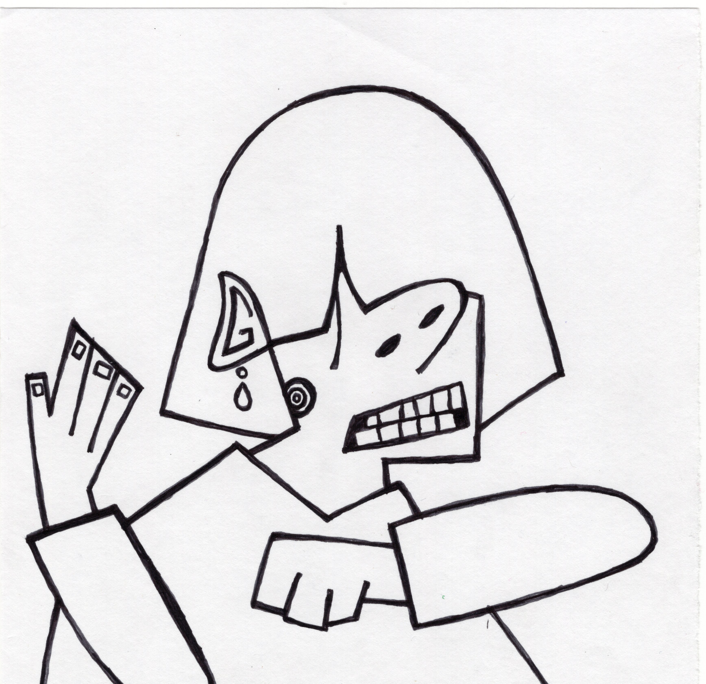
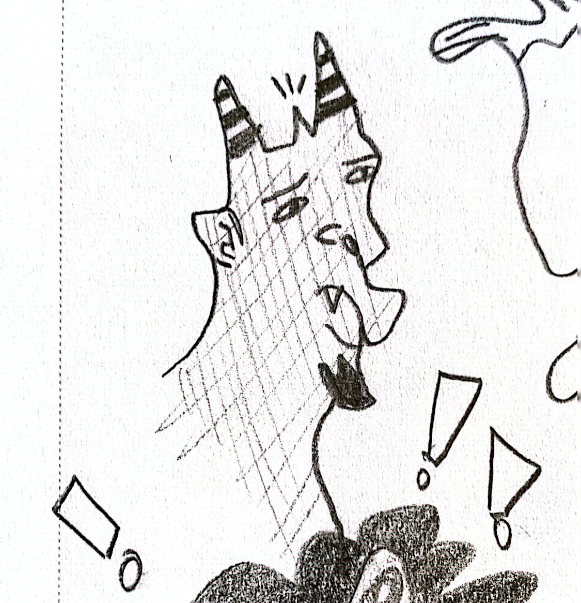
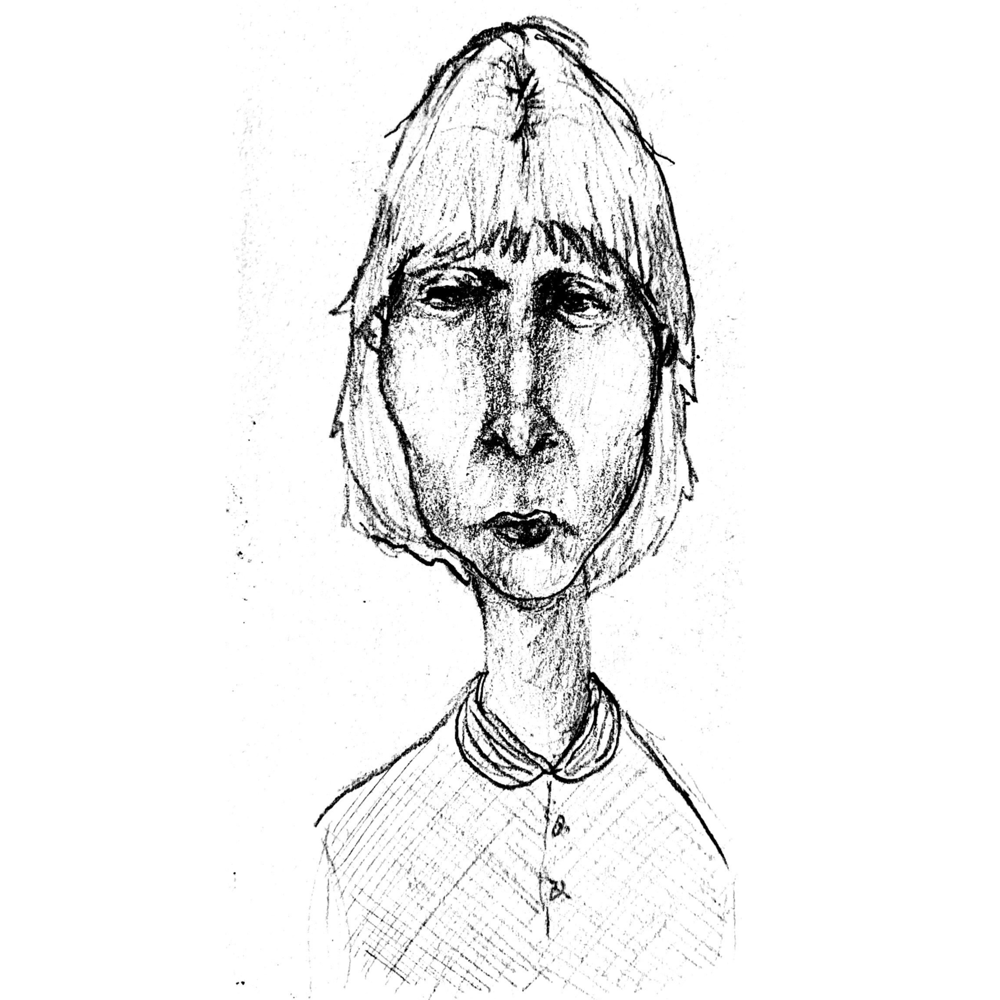
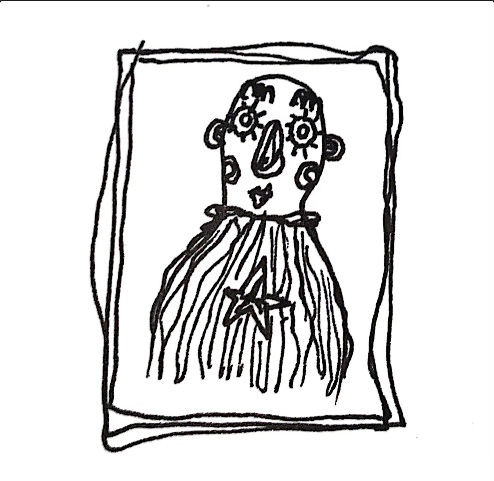
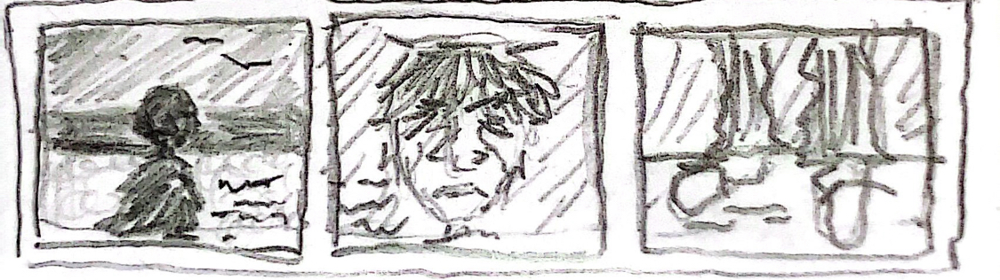

welcome
__________
hello and welcome to oldoldmold, a place full of dreams, inspirations, doodles, thoughts, prayers, love, hate, joy, sorrow, and whatever else!
I like to draw, make songs, build small sculptures, animate, make prints and primitive screenprints, knit, sew, crochet, and maybe some other thingsthis website is basically a dump site for the things I make, but I may also include things made by friends, so feel free to send something my way and I might just add it!









